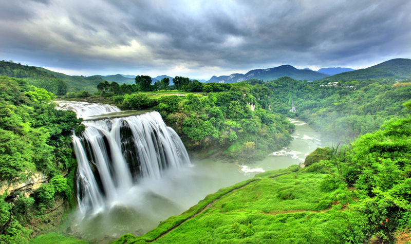
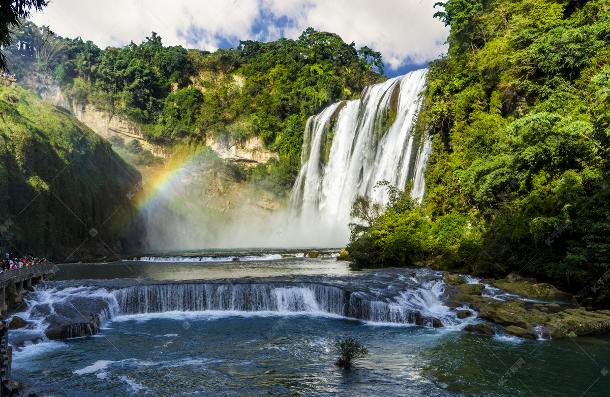
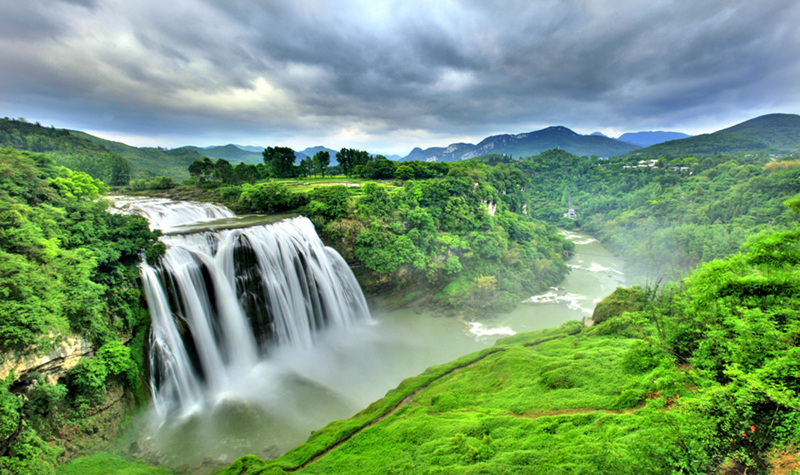
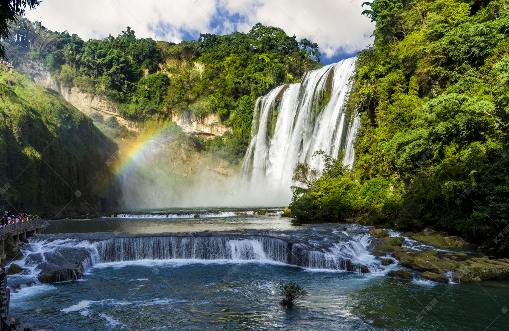

关于黄果树瀑布
黄果树瀑布，亚洲最大的瀑布，气势磅礴。景区内还有陡坡塘瀑布、天星桥等景点，各具特色。必看：黄果树大瀑布，水帘洞探秘。
Huangguoshu Waterfall, Asia's largest waterfall, truly majestic. The area also features Doupotang Waterfall and Tianxingqiao, each with unique charm. Must-sees: Huangguoshu Great Waterfall, explore the Water Curtain Cave.
Cascade de Huangguoshu, la plus grande d'Asie, vraiment majestueuse. La région comprend également la cascade de Doupotang et Tianxingqiao, chacun avec un charme unique. À voir absolument : Grande cascade de Huangguoshu, explorez la Grotte du Rideau d'Eau.


 



主要特色
-
黄果树大瀑布：亚洲最大的瀑布，宽约101米，高约77.8米，气势磅礴，声如巨雷。
Huangguoshu Great Waterfall: Asia's largest waterfall, about 101 meters wide and 77.8 meters high, with a majestic momentum and thunderous sound.
Grande Cascade de Huangguoshu : La plus grande cascade d'Asie, d'environ 101 mètres de large et 77,8 mètres de haut, avec un élan majestueux et un son tonitruant.
-
水帘洞：位于大瀑布之后，全长134米，洞内可以听瀑、观瀑、摸瀑，体验穿行瀑布的奇妙感受。
Water Curtain Cave: Located behind the Great Waterfall, 134 meters long. Inside, you can hear, watch, and touch the waterfall, experiencing the wonder of passing through it.
Grotte du Rideau d'Eau : Située derrière la Grande Cascade, longue de 134 mètres. À l'intérieur, vous pouvez entendre, regarder et toucher la cascade, vivant l'émerveillement de la traverser.
-
陡坡塘瀑布：黄果树瀑布群中瀑顶最宽的瀑布，平水时，如一层薄纱，洪峰时则如万马奔腾。
Doupotang Waterfall: The widest waterfall at its top in the Huangguoshu cluster. During normal flow, it resembles a thin veil; during floods, it's like ten thousand horses galloping.
Cascade de Doupotang : La cascade la plus large à son sommet dans le groupe de Huangguoshu. En débit normal, elle ressemble à un voile fin ; pendant les crues, c'est comme dix mille chevaux au galop.
游玩小贴士
景区较大，包含多个子景点，建议预留充足时间。雨季水量更大，观感更佳，但需注意防滑。可购买景区联票。
The scenic area is large and includes multiple sub-attractions; allow ample time. Water volume is greater during the rainy season for a better experience, but be mindful of slippery paths. Joint tickets for the scenic area are available.
La zone pittoresque est vaste et comprend plusieurs sous-attractions ; prévoyez suffisamment de temps. Le volume d'eau est plus important pendant la saison des pluies pour une meilleure expérience, mais faites attention aux sentiers glissants. Des billets combinés pour la zone pittoresque sont disponibles.